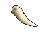

Cockatrice Feathers

Original feather, for comparison:

Frozen Tear
Imagegen promptTerror Fang

Imagegen prompt48×32 transparent canvases; native size and 8× zoom. Candidates only, not installed.
Original feather, for comparison:

Imagegen prompt